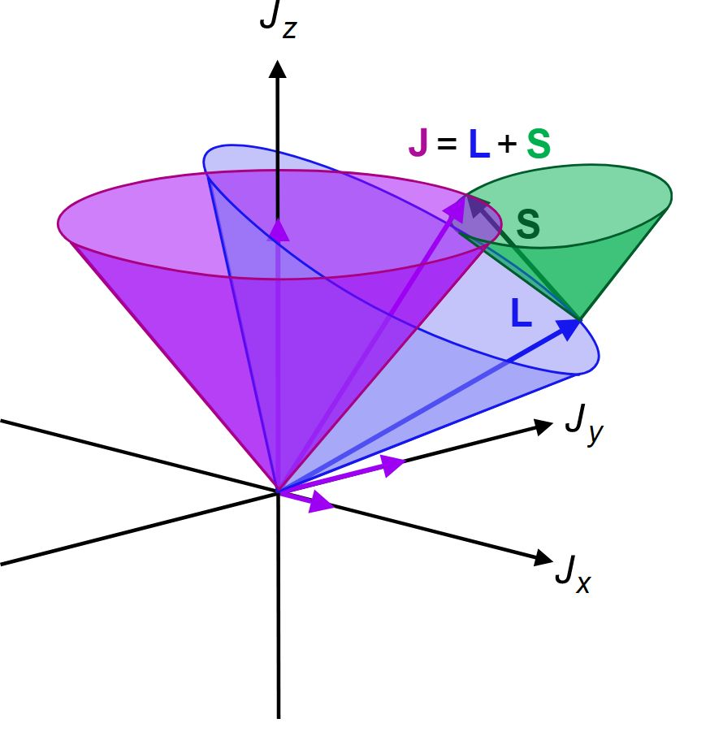
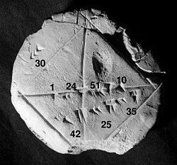
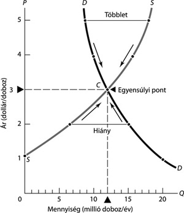
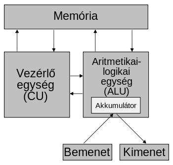

Kvantummechanika1
Az alap kérdés: Mennyire is tartozik mechanika csoportjába a kvantummechanika?
A kvantummechanika matematikai alapjai (The Mathematical Foundations of Quantum Mechanics) című alapvető könyvhöz vezetett. Jóllehet a fizikusok általában másfajta megközelítést fogadtak el, Neumanné inkább a matematikusok számára volt elegáns és kielégítő. A fizikusok által elfogadott megközelítést 1930-ban Paul Dirac fogalmazta meg. Ez egy különös függvényen – az úgynevezett Dirac-delta függvényen – alapult, amelyet Neumann keményen bírált.
Mindenesetre Neumann absztrakt kezelési módja lehetővé tette a számára, hogy szembeállítsa a determinizmus és a nem-determinista álláspont ügyét, és a könyvében megmutatta, hogy a kvantummechanika nem származtatható egy a klasszikus mechanikához hasonló determinisztikus elmélet statisztikai megközelítéséből. A bizonyítás ugyan tartalmazott egy fogalmi hibát, mégis egy sor kutatásra ösztönzött, amely John Stewart Bell 1964-es Bell-elmélettel kapcsolatos munkáján és Alain Aspect kísérletein keresztül megmutatta, hogy a kvantummechanika gyökeresen eltérő valóságképet igényel, mint a klasszikus fizika.
Egy 1936-os kiegészítő művében Neumann Garrett Birkhoffal együtt bebizonyította, hogy a kvantummechanika egy teljesen más logikát is követel, mint a klasszikus. Például a fény (a fotonok) nem képesek áthaladni két egymást követő, egymásra merőlegesen polarizált polárszűrőn, és emiatt egy harmadik szűrőn sem tud átmenni, amely az eredetiekhez képest ferdén polarizált, akár a másik kettő elé, akár mögé helyezzük. De ha a harmadik szűrőt a másik kettő közé helyezzük, a foton képes keresztülhaladni.
1 A kvantummechanika a fizika azon ága, amelyik a nanoszkopikus méreteknél történő jelenségeket vizsgálja; így az elemi részecskék viselkedését vagy például az olyan alacsony hőmérsékletű makrojelenségeket, mint a szuperfolyékonyság és a szupravezetés.
Kvantummechanikai atommodell
Babiloni agyagtábla I.E 1800-1600
Numerikus analízis
A numerikus analízis kezdete az ókori egyiptomi kultúráig nyúlik vissza; egyik első ilyen témájú írott emlék a Rhind papirusz (i. e. 1650 körül). Komolyabb fejlődésnek azonban csak Isaac Newton és Gottfried Leibniz munkásságának köszönhetően indult. A 18. és 19. században nem kisebb elmék, mint Leonhard Euler, Joseph Louis Lagrange és Carl Friedrich Gauss fejlesztették tovább a numerikus analízist. Ezen eredményekre építve a 20. század elejére kialakultak a kis lineáris egyenletrendszerek megoldására, kis mátrixok invertálására, a közönséges differenciálegyenletek megoldására és az integrálok közelítésére használható gyakorlati módszerek.
Neumann János felismerte, hogy kihasználva a számítógépek képességét hosszú számítási sorok emberi beavatkozás nélküli elvégzésére, kiterjesztheti a numerikus módszerek hatókörét az összetettebb lineáris egyenletrendszerekre és a parciális differenciálegyenletekre is. Neumann arra is rájött, hogy a fejlettebb módszerek alkalmazásának kulcsa a számítógépek memóriakapacitásának növelése. Az 1930-as évek végén létező számítógépek nagy előnye a számológépekkel szemben igazán jelentősen a szorzások műveleti sebességében mutatkozott meg, míg tárolókapacitás terén egyértelműen a lyukkártyás számológépek vezettek. A numerikus módszerek azonban nagy mennyiségben állítanak elő közbenső eredményeket, amelyeket egy gyorsan hozzáférhető központi memóriában tárolva komoly teljesítménynövekedést produkálhatunk.
Az eszközök fejlesztésén túl a módszereket is át kellett alakítani, mert a hagyományos eliminációs eljárások numerikusan nem voltak eléggé stabilak, azaz érzékenyek voltak a kerekítési hibák halmozódására. Az eliminációs eljárások helyét szukcesszív approximációs (sorozatosan közelítő) eljárások vették át, melyek ugyan több szorzást igényeltek, de természetüknél fogva stabilabbak voltak.
Közgazdaságtan
A 30-as években Wald Ábrahám matematikussal együtt foglalkoztak egyensúlyi feltételekkel dinamikus és statikus modellekben. Kettőjük munkája eredményeképpen jelentősen javult a közgazdaságtani elemzés technikai színvonala, feltárták több korábbi közgazdász teoretikus és politikai elemzésének hiányosságait.
Munkásságukat később olyan neves közgazdászok is felhasználták, mint Kenneth Arrow és Gerard Debreu, akik kiegészítették, és Walras általános egyensúlyi modellére alkalmazták. 1937-ben egy bécsi konferencián Wald előadta a statikus általános egyensúly létezésének bizonyítását, Neumann pedig (általánosítva az 1928-as játékelméleti cikkét) egy dinamikus modellben igazolta az egyensúlyi növekedési pálya létezését, s ez a dualitással együtt a széleskörben használt lineáris programozás előfutára lett.
Általános egyensúlyi modelle
Részlet a BASIC programozási nyelvből

Számítógép tervezése
Az elektronikus számítógépek logikai tervezésében kiemelkedő érdemeket szerzett. Ennek alapvető gondolatait – a kettes számrendszer alkalmazása, memória, programtárolás, utasítás rendszer – Neumann-elvekként emlegetjük. Tanácsadóként szerepelt az EDVAC – az első olyan számítógép, amely a memóriában tárolja a programot is – tervezésénél 1944-től, amelyet 1952-ben helyeztek üzembe. Ennek a számítógépnek a tervezése során fejlesztette ki az elektronikus számítógépek belső szervezésének elméletét (Neumann-elv), amelynek alapján készülnek a mai számítógépek is.
Együtt dolgozott sok más amerikai magyar emigráns tudóssal is e téren, akik szintén szerepet vállaltak a számítástechnika fejlődésében. Ezek közé sorolható Kemény János (1926–1992), aki a Dartmouth Egyetem rektoraként kötelezővé tette a számítógépek (terminálok) használatát a bölcsész és jogi karon is, és e célból megalkotta az elvont gépi programozás helyett a BASIC nyelvet. Szintén Kemény János nevéhez fűződik az osztott idejű számítógép hálózat is, melyet az IBM első Robinson-díja ismert el.
Szilárd Leóval is kollaborált, ő vezette be az információ elemi kvantumát (igen/nem), amit ma a bit néven ismerünk, illetve nem hagyható ki e listáról a Time hetilap által 1997-ben az év emberének nevezett Andrew Grove (Gróf András), aki pedig az Intel vezéreként évente megtöbbszörözte a mikroprocesszorok sebességét.
Neumann Elvek
Az első elektronikusan működő számítógép, az ENIAC (angolul Electronic Numerical Integrator And Computer) építési tapasztalatai alapján a számítógép építéséhez nélkülözhetetlen alapelveket Neumann János matematikus dolgozta ki, aki az ENIAC-nál gyorsabb, megbízhatóbb, egyszerűbb és könnyebben kezelhető gépet szeretett volna megépíteni.
Az általunk ma Neumann-elveknek nevezett kritériumrendszert elsőként az 1945. június 30-án kiadott „First Draft of a Report on the Edvac” című művében publikálta.
Neumann János 1945-ben a Princentoni Egyetemen az elektronikus számítógép program igazgatója volt, amikor Herman Goldstine-nal megépítették az akkori legkorszerűbb, tárolt programmal vezérelt számítógépet, amit kutatási célokra terveztek. Az 1949-ben megépített EDVAC (angolul Electronic Discrete Variable Automatic Computer), már Neumann elgondolásai alapján épült és a világon az első, belső programvezérlésű, elektronikus, digitális, univerzális számítógép volt.
Neumann Jánosnak az "EDVAC-jelentés első vázlata" című meghatározó munkája a teljes elemzését adta az EDVAC tervezett architektúrájának. A jelentés tartalmazta a megépítendő számítógép javasolt felépítését, a részegységek megépítéséhez szükséges logikai áramköröket és a gép kódját.
A Neumann-elvek publikációit teljesen szabadon közreadták, így az EDVAC első üzembe helyezésekor már néhány egyéb Neumann-elvű számítógép is létezett a világban. EDSAC (angolul Electronic Delay Storage Automatic Calculator), UNIVAC (angolul Universal Automatic Computer).
Elvek listája:
- Teljesen elektronikus működés (ez Neumann idejében elektroncsöves felépítést jelentett, amit később a tranzisztoros, majd az integrált áramkörös felépítés követett)
- Kettes számrendszer használata (az összes művelet, pl. összeadás, szorzás, kettes számrendszerbeli logikai műveletekre redukálható)
- Belső memória használata
- Tárolt program elve. A számításokhoz szükséges adatokat és programutasításokat a gép azonos módon, egyaránt a belső memóriában (operatív tár) tárolja.[3]
- Soros utasítás-végrehajtás (az utasítások végrehajtása időben egymás után történjen; ennek egy alternatívája a párhuzamos utasítás-végrehajtás, amikor több utasítás egyidejűleg is végrehajtható: ezt a lehetőséget Neumann elvetette)
- Univerzális felhasználhatóság, Turing-gép (programozhatóság; a különböző feladatok programokkal legyenek megoldva, nem pedig erre a célra épített hardverrel)
- Szerkezet: öt funkcionális egység (aritmetikai egység, központi vezérlőegység, memóriák, bemeneti és kimeneti egységek)
Neumann Elvek

Short Description
Neumann contrasted the case of determinism and non-determinism and showed in his book that quantum mechanics cannot be derived from the statistical approach of a deterministic theory similar to classical mechanics
János Neumann realized that by taking advantage of the ability of computers to perform long series of calculations without human intervention, he could extend the range of numerical methods to more complex systems of linear equations and partial differential equations
In the 1930s, together with the mathematician Ábrahám Wald, they dealt with equilibrium conditions in dynamic and static models. As a result of the work of the two of them, the technical level of economic analysis improved significantly, and the shortcomings of the theoretical and political analysis of several previous economists were revealed.
János Neumann developed the basic principles essential for building the computer based on his experience building the first electronically functioning computer, the ENIAC (Electronic Numerical Integrator And Computer)